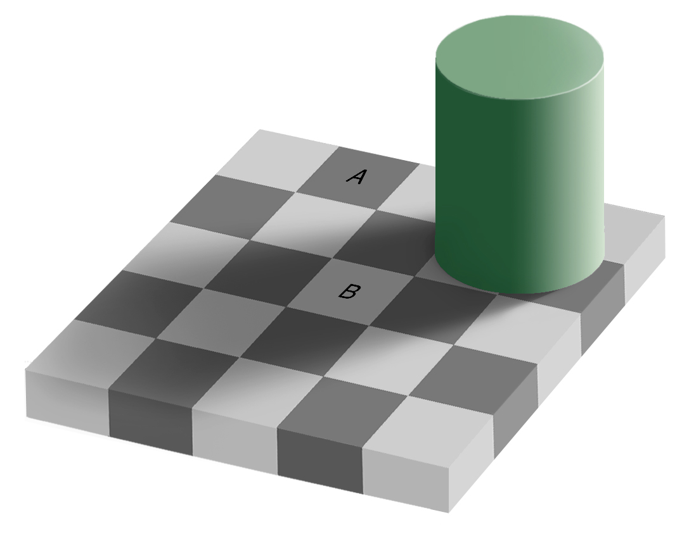
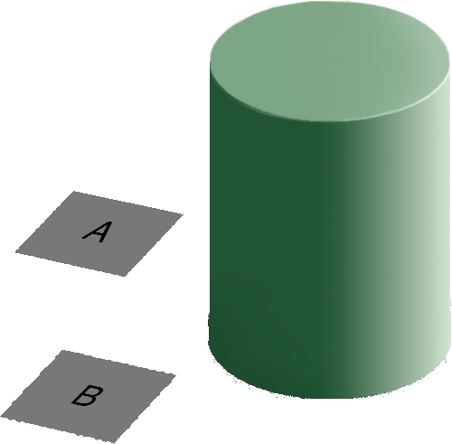
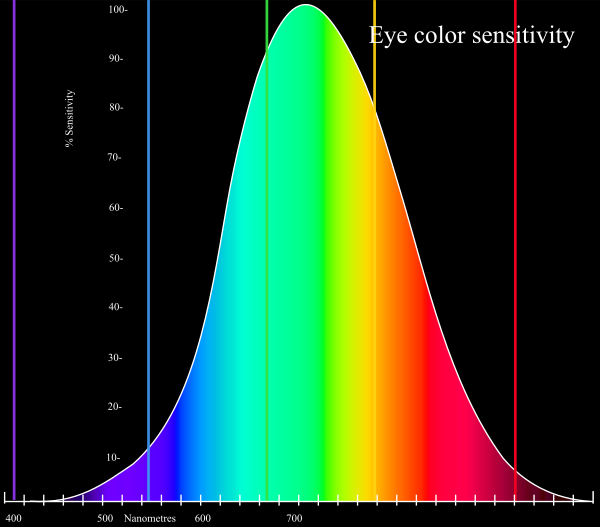
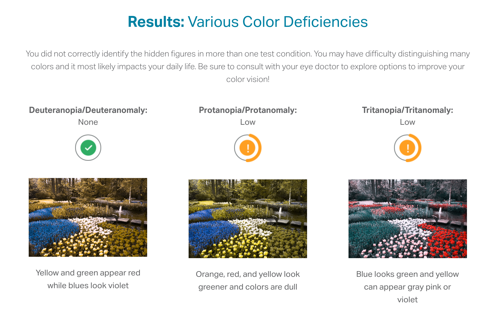
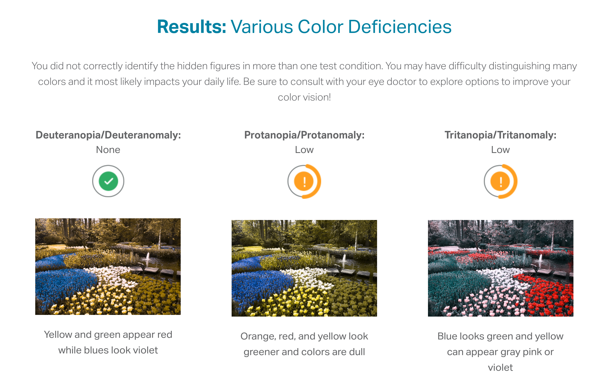
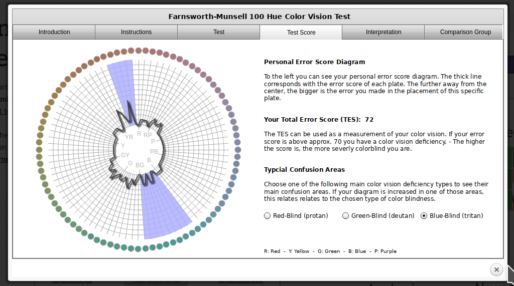
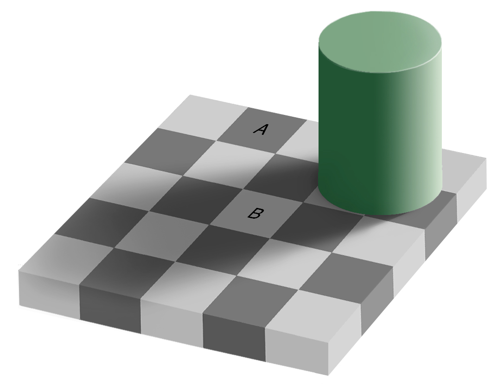
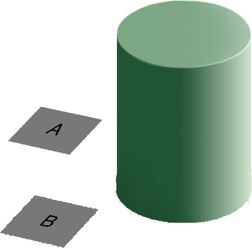
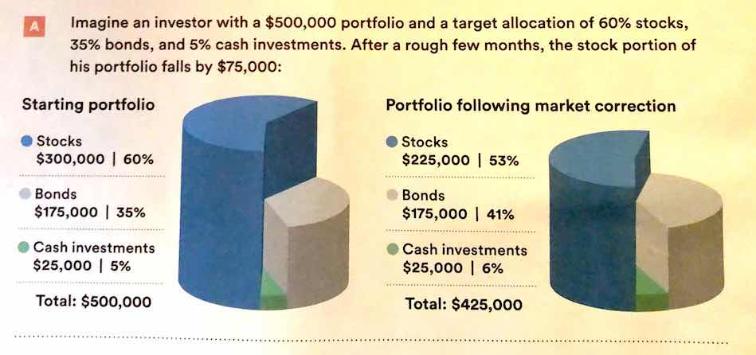

{kind=link}


A chart is good if it allows the user to draw useful conclusions that are supported by data. Obviously, this definition depends on the purpose of the chart - a simple EDA chart is going to have a different purpose than a chart showing e.g. the predicted path of a hurricane, which people will use to make decisions about whether or not to evacuate.
Unfortunately, while our visual system is amazing, it is not always as accurate as the computers we use to render graphics. We have physical limits in the number of colors we can perceive, our short term memory, attention, and our ability to accurately read information off of charts in different forms.
Our eyes are optimized for perceiving the yellow/green region of the color spectrum. Why? Well, our sun produces yellow light, and plants tend to be green. It’s pretty important to be able to distinguish different shades of green (evolutionarily speaking) because it impacts your ability to feed yourself. There aren’t that many purple or blue predators, so there is less selection pressure to improve perception of that part of the visual spectrum.

Not everyone perceives color in the same way. Some individuals are colorblind or color deficient. We have 3 cones used for color detection, as well as cells called rods which detect light intensity (brightness/darkness). In about 5% of the population (10% of XY individuals, <1% of XX individuals), one or more of the cones may be missing or malformed, leading to color blindness - a reduced ability to perceive different shades. The rods, however, function normally in almost all of the population, which means that light/dark contrasts are extremely safe, while contrasts based on the hue of the color are problematic in some instances.
You can take a test designed to screen for colorblindness here
Your monitor may affect how you score on these tests - I am colorblind, but on some monitors, I can pass the test, and on some, I perform worse than normal. A different test is available here.
 

 In reality, I know that I have issues with perceiving some shades of red, green, and brown. I have particular trouble with very dark or very light colors, especially when they are close to grey or brown.
In addition to colorblindness, there are other factors than the actual color value which are important in how we experience color, such as context.


Our brains are extremely dependent on context and make excellent use of the large amounts of experience we have with the real world. As a result, we implicitly “remove” the effect of things like shadows as we make sense of the input to the visual system. This can result in odd things, like the checkerboard and shadow shown above - because we’re correcting for the shadow, B looks lighter than A even though when the context is removed they are clearly the same shade.
Implications and Guidelines
RColorBrewer and dichromat that have color palettes which are aesthetically pleasing, and, in many cases, colorblind friendly (dichromat is better for that than RColorBrewer). You can also take a look at other ways to find nice color palettes.We have a limited amount of memory that we can instantaneously utilize. This mental space, called short-term memory, holds information for active use, but only for a limited amount of time.
1 4 2 2 3 9 8 0 7 8
What was the third number?
Without rehearsing the information (repeating it over and over to yourself), the try it out task may have been challenging. Short term memory has a capacity of between 3 and 9 “bits” of information.
In charts and graphs, short term memory is important because we need to be able to associate information from e.g. a key, legend, or caption with information plotted on the graph. As a result, if you try to plot more than ~6 categories of information, your reader will have to shift between the legend and the graph repeatedly, increasing the amount of cognitive labor required to digest the information in the chart.
Where possible, try to keep your legends to 6 or 7 characteristics.
Implications and Guidelines
Limit the number of categories in your legends to minimize the short term memory demands on your reader.
Use colors and symbols which have implicit meaning to minimize the need to refer to the legend.
Add annotations on the plot, where possible, to reduce the need to re-read captions.
Imposing order on visual chaos.
What does the figure below look like to you?

When faced with ambiguity, our brains use available context and past experience to try to tip the balance between alternate interpretations of an image. When there is still some ambiguity, many times the brain will just decide to interpret an image as one of the possible options.

Did you see something like “3 circles, a triangle with a black outline, and a white triangle on top of that”? In reality, there are 3 angles and 3 pac-man shapes. But, it’s much more likely that we’re seeing layers of information, where some of the information is obscured (like the “mouth” of the pac-man circles, or the middle segment of each side of the triangle). This explanation is simpler, and more consistent with our experience.
Now, look at the logo for the Pittsburgh Zoo.

Do you see the gorilla and lionness? Or do you see a tree? Here, we’re not entirely sure which part of the image is the figure and which is the background.
The ambiguous figures shown above demonstrate that our brains are actively imposing order upon the visual stimuli we encounter. There are some heuristics for how this order is applied which impact our perception of statistical graphs.
The catchphrase of Gestalt psychology is
The whole is greater than the sum of the parts
That is, what we perceive and the meaning we derive from the visual scene is more than the individual components of that visual scene.

You can read about the gestalt rules here, but they are also demonstrated in the figure above.
In graphics, we can leverage the gestalt principles of grouping to create order and meaning. If we color points by another variable, we are creating groups of similar points which assist with the perception of groups instead of individual observations. If we add a trend line, we create the perception that the points are moving “with” the line (in most cases), or occasionally, that the line is dividing up two groups of points. Depending on what features of the data you wish to emphasize, you might choose different aesthetics mappings, facet variables, and factor orders.
Suppose I want to emphasize the change in the murder rate between 1980 and 2010.
I could use a bar chart (showing only the first 4 states alphabetically for space)
fbiwide <- read.csv("https://github.com/srvanderplas/Stat151/raw/main/data/fbiwide.csv")
library(dplyr)
fbiwide %>%
filter(Year %in% c(1980, 2010)) %>%
filter(State %in% c("Alabama", "Alaska", "Arizona", "Arkansas")) %>%
ggplot(aes(x = State, y = Murder/Population*100000, fill = factor(Year))) +
geom_col(position = "dodge") +
coord_flip() +
ylab("Murders per 100,000 residents")
## Error in ggplot(., aes(x = State, y = Murder/Population * 1e+05, fill = factor(Year))): could not find function "ggplot"import pandas as pd
fbiwide = r.fbiwide
fbiwide = fbiwide.assign(YearFactor = pd.Categorical(fbiwide.Year))
fbiwide = fbiwide.assign(Murder100k = fbiwide.Murder/fbiwide.Population * 100000)
yr1980_2010 = fbiwide[fbiwide.Year.isin([1980,2010])]
subdata = yr1980_2010[yr1980_2010.State.isin(["Alabama", "Alaska", "Arizona", "Arkansas"])]
(
ggplot(subdata, aes(x = "State", y = "Murder100k", fill = "YearFactor")) +
geom_col(stat='identity', position = "dodge") +
coord_flip() +
ylab("Murders per 100,000 residents")
)
## Error in py_call_impl(callable, dots$args, dots$keywords): NameError: name 'ggplot' is not definedOr, I could use a line chart
(
ggplot(yr1980_2010, aes(x = "Year", y = "Murder100k", group = "State")) +
geom_line() +
ylab("Murders per 100,000 residents")
)
## Error in py_call_impl(callable, dots$args, dots$keywords): NameError: name 'ggplot' is not definedOr, I could use a box plot
(
ggplot(yr1980_2010, aes(x = "YearFactor", y = "Murder100k")) +
geom_boxplot() +
ylab("Murders per 100,000 residents")
)
## Error in py_call_impl(callable, dots$args, dots$keywords): NameError: name 'ggplot' is not definedWhich one best demonstrates that in every state and region, the murder rate decreased?
The line segment plot connects related observations (from the same state) but allows you to assess similarity between the lines (e.g. almost all states have negative slope). The same information goes into the creation of the other two plots, but the bar chart is extremely cluttered, and the boxplot doesn’t allow you to connect single state observations over time. So while you can see an aggregate relationship (overall, the average number of murders in each state per 100k residents decreased) you can’t see the individual relationships.
The aesthetic mappings and choices you make when creating plots have a huge impact on the conclusions that you (and others) can easily make when examining those plots.3
There are certain tasks which are easier for us relative to other, similar tasks.
## Error in ggplot(segs, aes(x = x, xend = x, y = y1, yend = y2)): could not find function "ggplot"When making judgments corresponding to numerical quantities, there is an order of tasks from easiest (1) to hardest (6), with equivalent tasks at the same level.4
If we compare a pie chart and a stacked bar chart, the bar chart asks readers to make judgements of position on a non-aligned scale, while a pie chart asks readers to assess angle. This is one reason why pie charts are not preferable – they make it harder on the reader, and as a result we are less accurate when reading information from pie charts.
When creating a chart, it is helpful to consider which variables you want to show, and how accurate reader perception needs to be to get useful information from the chart. In many cases, less is more - you can easily overload someone, which may keep them from engaging with your chart at all. Variables which require the reader to notice small changes should be shown on position scales (x, y) rather than using color, alpha blending, etc.
There is also a general increase in dimensionality from 1-3 to 4 (2d) to 5 (3d). In general, showing information in 3 dimensions when 2 will suffice is misleading - the addition of that extra dimension causes an increase in chart area allocated to the item that is disproportionate to the actual area.
.
Ted ED: How to spot a misleading graph - Lea Gaslowitz
Business Insider: The Worst Graphs Ever
Extra dimensions and other annotations are sometimes called “chartjunk” and should only be used if they contribute to the overall numerical accuracy of the chart (e.g. they should not just be for decoration).
When the COVID-19 outbreak started, many maps were using white-to-red gradients to show case counts and/or deaths. The emotional association between red and blood, danger, and death may have caused people to become more frightened than what was reasonable given the available information.↩︎
Lisa Charlotte Rost. What to consider when choosing colors for data visualization.↩︎
See this paper for more details. This is the last chapter of my dissertation, for what it’s worth. It was a lot of fun. (no sarcasm, seriously, it was fun!)↩︎
See this paper for the major source of this ranking; other follow-up studies have been integrated, but the essential order is largely unchanged.↩︎